NGC galaxies in KS4
This gallery shows the galaxies from the New General Catalogue that are larger than two arcminutes, lie south of declination −28° and fall inside the footprint of KS4 Data Release 1. Click an image to see it larger. The name under each image opens the KS4 BVI colour HiPS in Aladin Lite so you can pan and zoom around it. The white bar in the lower-right corner of each image is one arcminute.

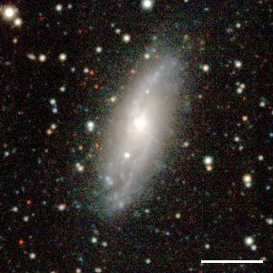

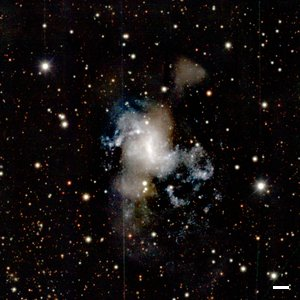

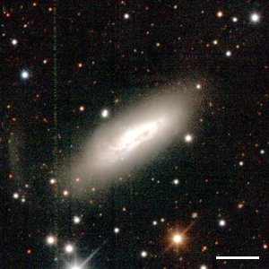

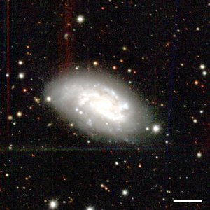

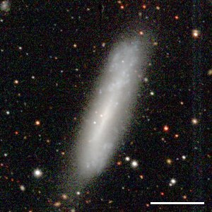

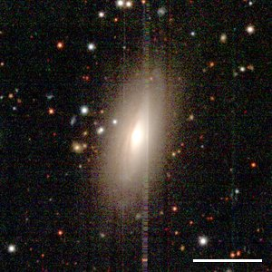

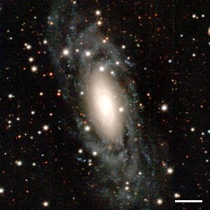

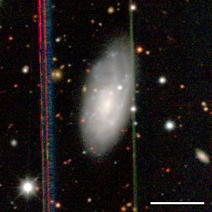

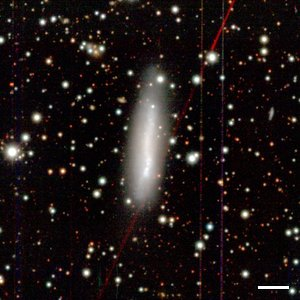

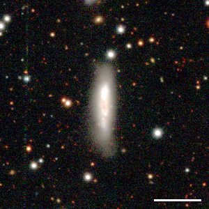

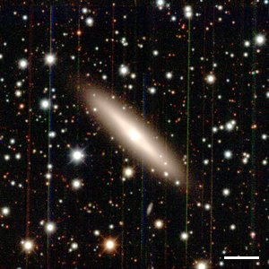

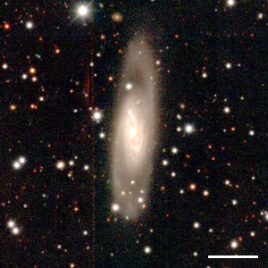

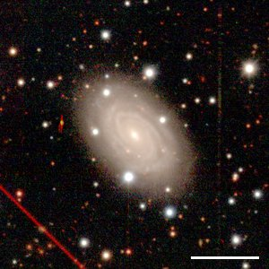

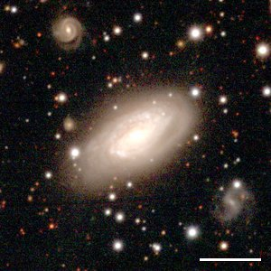

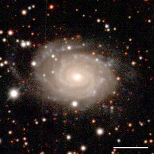

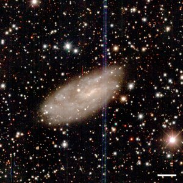

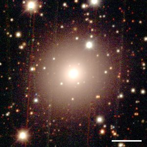

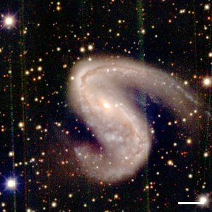

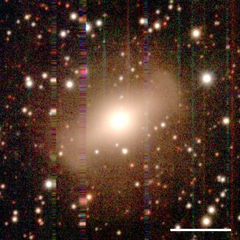

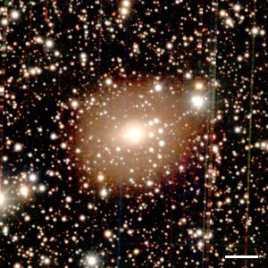

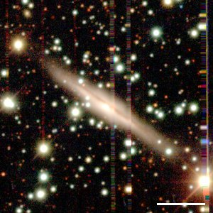

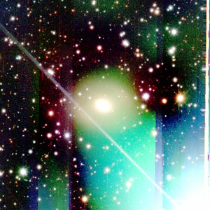

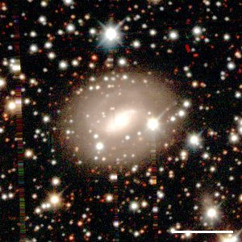

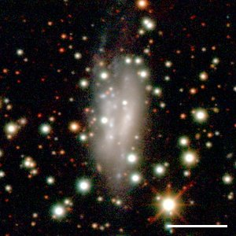

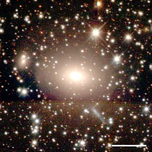

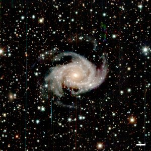

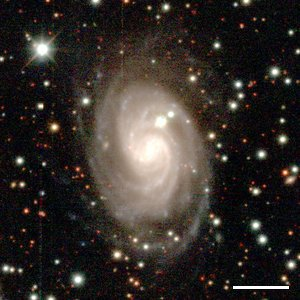

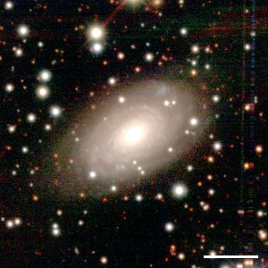

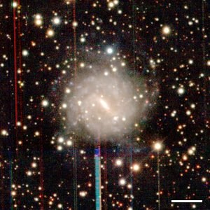

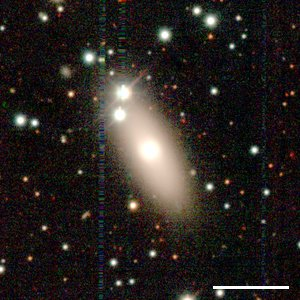

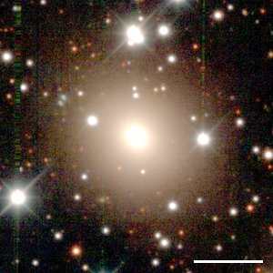

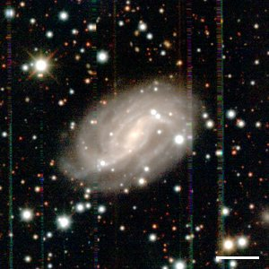

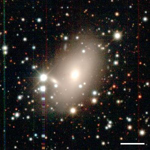

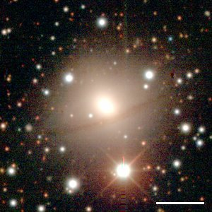

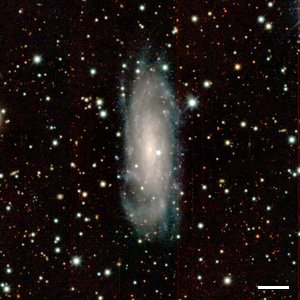

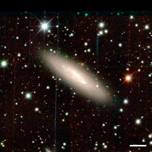

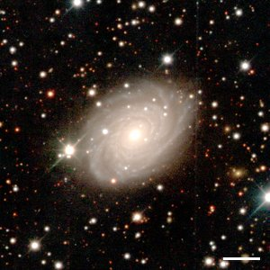

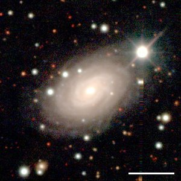

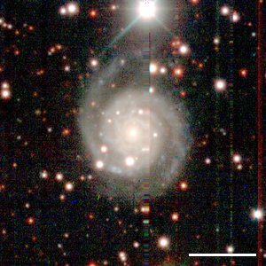

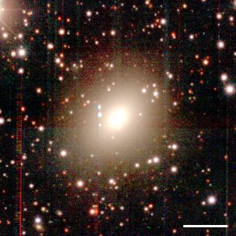

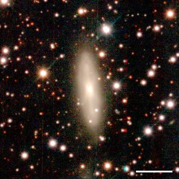

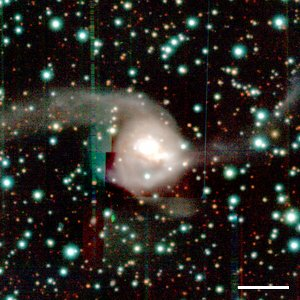

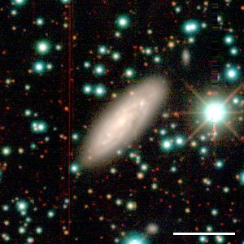

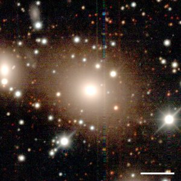

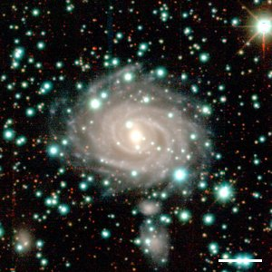

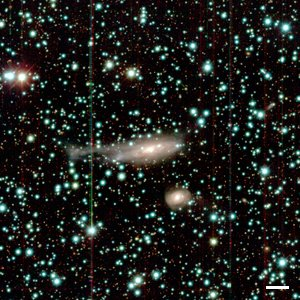

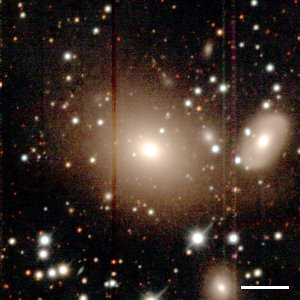

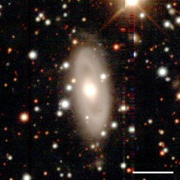

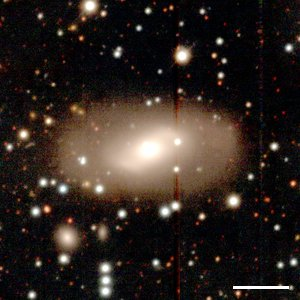

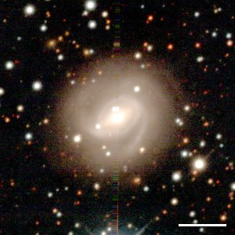


Images: KMTNet Synoptic Survey of Southern Sky (KS4) DR1, BVI colour HiPS (Chang et al. 2026, JKAS). Object list, positions and sizes: OpenNGC (CC BY-SA 4.0).